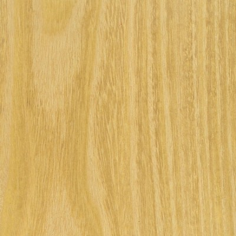

|
|

|
Materials Used in Ornamental Turning
Osage Orange |
|

Osage Orange
Ornamentally Turned Objects This is a good wood for ornamental turning, but the grain is fairly open so it is not used often for work with lots of ornamentation. It holds shapes well, including threads. A more common approach for this wood is to make an object using a different wood, and use Osage Orange to add a bit of ornamentation for flair. One example is the atomizer shown in the picture to the left, or a handle for a kitchen utensil. Whilst the name is "orange", the pieces I find are very yellow. It is sometimes called "yellow heart". Osage Orange takes its name from the Osage Indian tribe, which lived near where the tree was first grown. And the fruit that grows on the tree smells like an orange when it is ripe. It is very available, and at a very low cost (or even free). Smaller pieces are often available as firewood. It holds shapes well, and finishes super smooth so it is great for objects that will be handled often. And the color is beautiful for certain uses. Ornamental Turning Notes Working the wood is easy, but requires some pre-planning. End grain work will easily "burn", so you will need to decrease the contact time with the cutter. This can be achieved by slowing the cutter speed (i.e., slowing down the overhead drive), or by increasing the spindle drive speed (I typically run this 40-50% faster), or both. Finishing Finishing this may be necessary to bring out the beauty of the wood. Without a finish, it may look a bit dry. If it is to be handled, I use Tried & True’s Original Wood Finish. When it is used for items like ice cream scoops where it will be around water often, a polyurethane finish will probably be necessary. Other More information is in The Wood Database. |